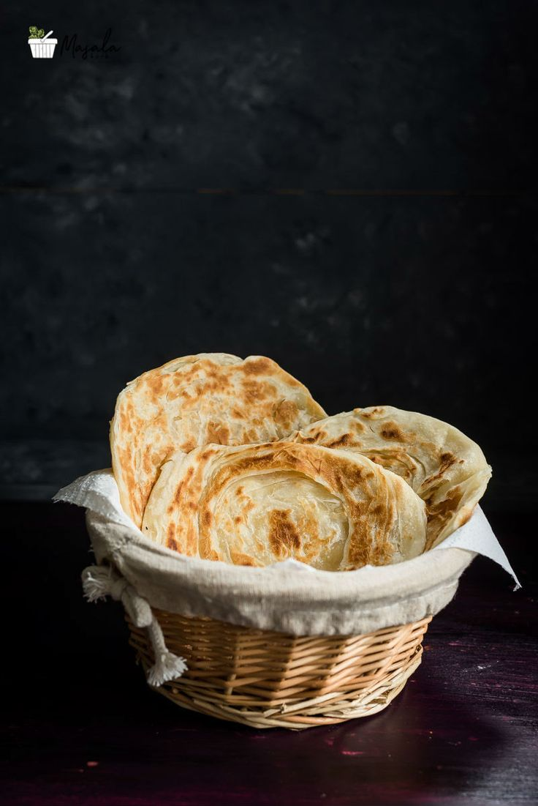

Parotta
Home

a layered flatbread from southern India,made with ghee or oil and usually maida or white flour.
Ingredients
- All-purpose flour (maida)
- Salt
- Oil
- Water
- Eggs
- Sugar
- Milk
preparation steps
- Mix the flour, salt, and egg in a bowl.
- Dissolve sugar in milk and add it to the flour.
- Add oil to the flour and knead for at least five minutes.
- Let the dough rest for about an hour.
- Knead the dough again for a minute.
- Roll out the dough on a flat surface dusted with flour until it's very thin.
- Heat oil in a tawa and cook the parotta on both sides.
- Fluff up the parotta by gently beating it.